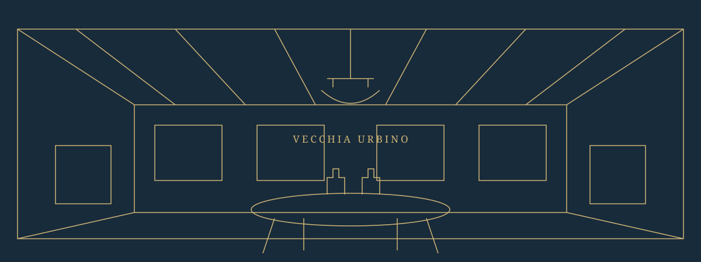

Un primo assaggio.
Antipasti e proposte da condividere, per cominciare la visita.
Una sala dal carattere eclettico, la cucina del territorio, il piacere di prendersi il proprio tempo. Benvenuti alla Vecchia Urbino.

Cucina · Arte · Convivialità
In Via dei Vasari, un indirizzo da scoprire tra le vie del centro storico. Travi a vista, quadri e bottiglie danno forma a un ambiente diverso dai soliti, da vivere con calma.
Entra nell’atmosfera ↗Pasta, tartufo e sapori della tradizione: un invito a conoscere la nostra cucina.
Chiedici come accompagnare la tua scelta, dall’inizio al fine pasto.
Una pausa nel centro di Urbino, per concedersi il piacere di una visita senza fretta.
Antipasti e proposte da condividere, per cominciare la visita.
Primi piatti e secondi da scegliere seguendo il proprio appetito.
Un dolce, un caffè o un fine pasto. Ancora un momento insieme.
Per un pranzo durante la tua visita o una cena da condividere, contattaci e verifichiamo insieme la disponibilità.